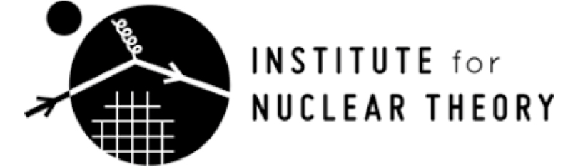
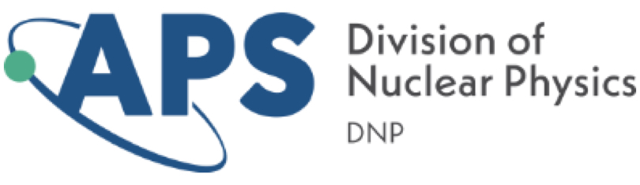
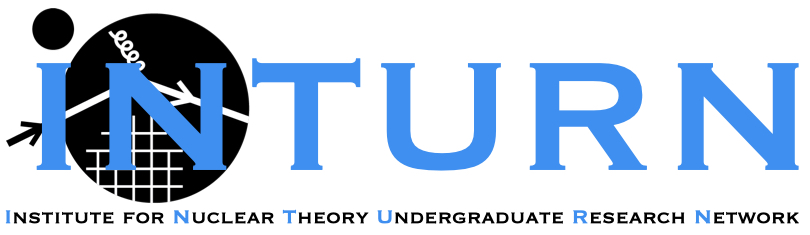
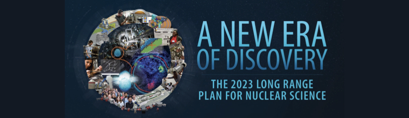

I am an active member of the physics community
Currently, I am serving in the following roles:
-

2024/09-present: Member of the Executive Committee for the Mentorships for Inclusive Nuclear Theory (MINT) program at the Institute for Nuclear Theory (INT), University of Washington
-

2024/06-present: Member of the APS Division of Nuclear Physics Mentoring Award Committee
-
2023/06-present: Member of the APS Division of Nuclear Physics Education Committee
In the past, I also served in the following ways:
-

2023/08-2024/02: Co-organizer of the INT Undergraduate Research Network (INTURN) at the Institute for Nuclear Theory (INT), University of Washington
-
2023/04-2024/04: Member of the APS Division of Nuclear Physics Executive Committee
-

2022/09-2023/02: Community leader in the U.S. Long Range Plan for Nuclear Science process
-
2022/09-2023/08: Member of the University of Washington's Physics Department Climate and Diversity Committee
-
2021/06-2023/08: Student/Postdoc Member of the RHIC & AGS Users’ Executive Committee
-
2016/02-2017/06: Representative for Physics Graduate Students at UCLA